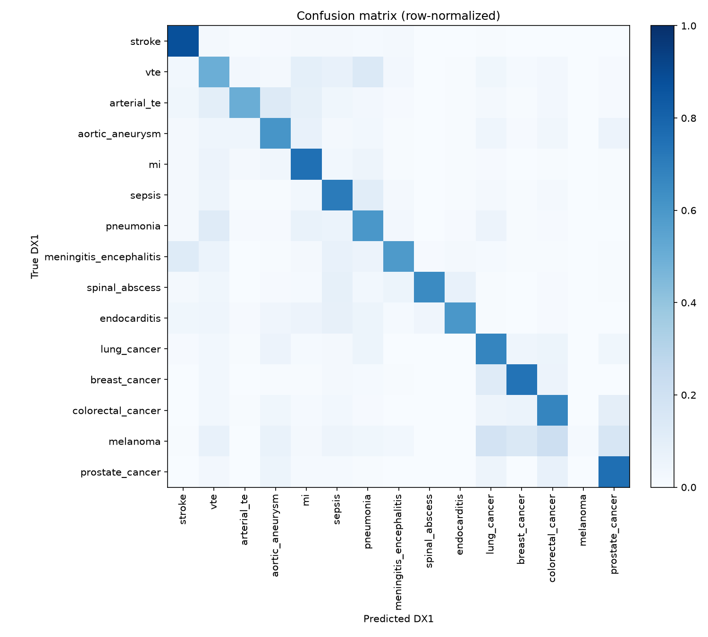
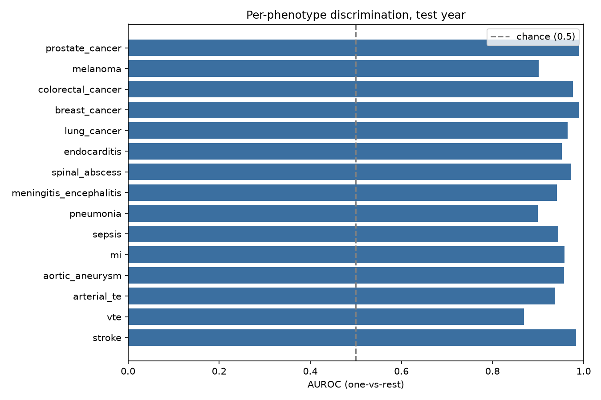
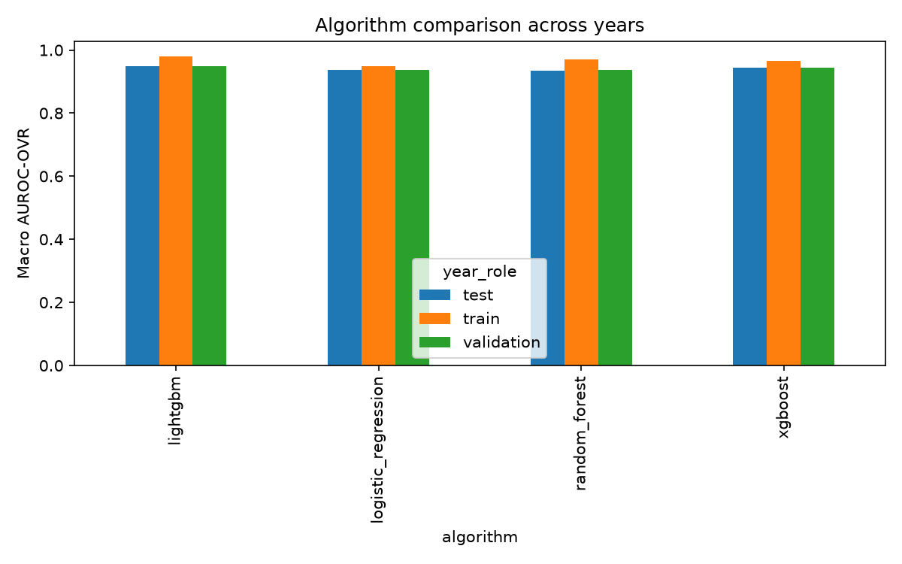

Generated 2026-08-30T02:19:38
H1: Within a leakage-controlled, cross-year-replicated supervised multiclass framework for diagnostic-quality auditing, a hospitalized patient's secondary-diagnosis profile (DX2-DX25) discriminates the principal diagnosis (DX1) among fifteen vascular, infectious, and oncological phenotypes in the U.S. National Inpatient Sample, 2021-2023, under severe class imbalance.
lightgbm
| metric | value | 95% CI |
|---|---|---|
| Macro AUROC (OVR) | 0.9491 | (0.9490645418331903, 0.9478672598238957, 0.9502637451678477) |
| Macro MCC | 0.6215 | (0.6215060041973651, 0.6205213268797342, 0.6225692116676816) |
| Balanced accuracy | 0.6154 | (0.6154087968848333, 0.6121605398432025, 0.6185001817231588) |
| observed_macro_auroc_ovr | null_mean | null_std | n_permutations | p_value | min_achievable_p | underpowered | significant_at_0.05 |
|---|---|---|---|---|---|---|---|
| 0.9491 | 0.5000 | 0.0013 | 200 | 0.0050 | 0.0050 | False | True |
| phenotype | prevalence | auroc_ovr | auroc_ci_lo | ppv_lift_over_null | statistically_valid | floor_rule_applied | clears_performance_floor | phenotype_supported |
|---|---|---|---|---|---|---|---|---|
| stroke | 0.1291 | 0.9835 | 0.9832 | 6.7169 | True | auroc_ovr>=0.7 | True | True |
| vte | 0.0564 | 0.8687 | 0.8672 | 6.2749 | True | auroc_ovr>=0.7 | True | True |
| arterial_te | 0.0031 | 0.9371 | 0.9325 | 44.1498 | True | ppv_lift>=2.0 (low-prevalence carve-out) | True | True |
| aortic_aneurysm | 0.0147 | 0.9570 | 0.9555 | 26.4140 | True | auroc_ovr>=0.7 | True | True |
| mi | 0.1152 | 0.9582 | 0.9577 | 6.2830 | True | auroc_ovr>=0.7 | True | True |
| sepsis | 0.4968 | 0.9444 | 0.9441 | 1.9070 | True | auroc_ovr>=0.7 | True | True |
| pneumonia | 0.1198 | 0.8993 | 0.8985 | 4.2185 | True | auroc_ovr>=0.7 | True | True |
| meningitis_encephalitis | 0.0040 | 0.9418 | 0.9377 | 31.2592 | True | ppv_lift>=2.0 (low-prevalence carve-out) | True | True |
| spinal_abscess | 0.0016 | 0.9720 | 0.9674 | 202.6673 | True | ppv_lift>=2.0 (low-prevalence carve-out) | True | True |
| endocarditis | 0.0023 | 0.9526 | 0.9469 | 85.6014 | True | ppv_lift>=2.0 (low-prevalence carve-out) | True | True |
| lung_cancer | 0.0221 | 0.9653 | 0.9643 | 17.6884 | True | auroc_ovr>=0.7 | True | True |
| breast_cancer | 0.0042 | 0.9890 | 0.9878 | 76.7080 | True | ppv_lift>=2.0 (low-prevalence carve-out) | True | True |
| colorectal_cancer | 0.0250 | 0.9763 | 0.9756 | 20.1298 | True | auroc_ovr>=0.7 | True | True |
| melanoma | 0.0004 | 0.9012 | 0.8852 | 90.6279 | True | ppv_lift>=2.0 (low-prevalence carve-out) | True | True |
| prostate_cancer | 0.0055 | 0.9894 | 0.9884 | 59.6477 | True | ppv_lift>=2.0 (low-prevalence carve-out) | True | True |
| macro_auroc_ovr | macro_f1 | weighted_f1 | macro_precision | macro_recall | mcc | balanced_accuracy | brier_multiclass | n | n_classes_present | algorithm | year_role | year |
|---|---|---|---|---|---|---|---|---|---|---|---|---|
| 0.9499 | 0.4057 | 0.6911 | 0.3658 | 0.6751 | 0.5572 | 0.6751 | 0.4942 | 959118 | 15 | logistic_regression | train | 2021 |
| 0.9366 | 0.3922 | 0.6792 | 0.3558 | 0.6205 | 0.5473 | 0.6205 | 0.5073 | 970227 | 15 | logistic_regression | validation | 2022 |
| 0.9360 | 0.3837 | 0.6697 | 0.3476 | 0.6207 | 0.5398 | 0.6207 | 0.5205 | 1027630 | 15 | logistic_regression | test | 2023 |
| 0.9697 | 0.4813 | 0.7040 | 0.4130 | 0.7876 | 0.5885 | 0.7876 | 0.5435 | 959118 | 15 | random_forest | train | 2021 |
| 0.9369 | 0.3953 | 0.6737 | 0.3519 | 0.5968 | 0.5495 | 0.5968 | 0.5709 | 970227 | 15 | random_forest | validation | 2022 |
| 0.9354 | 0.3862 | 0.6650 | 0.3437 | 0.5909 | 0.5418 | 0.5909 | 0.5796 | 1027630 | 15 | random_forest | test | 2023 |
| 0.9798 | 0.6315 | 0.7694 | 0.5448 | 0.8507 | 0.6748 | 0.8507 | 0.3504 | 959118 | 15 | lightgbm | train | 2021 |
| 0.9497 | 0.4753 | 0.7361 | 0.4188 | 0.6192 | 0.6288 | 0.6192 | 0.3986 | 970227 | 15 | lightgbm | validation | 2022 |
| 0.9491 | 0.4660 | 0.7286 | 0.4090 | 0.6154 | 0.6215 | 0.6154 | 0.4090 | 1027630 | 15 | lightgbm | test | 2023 |
| 0.9649 | 0.4619 | 0.7192 | 0.4028 | 0.7478 | 0.6004 | 0.7478 | 0.4392 | 959118 | 15 | xgboost | train | 2021 |
| 0.9444 | 0.4223 | 0.7013 | 0.3748 | 0.6321 | 0.5803 | 0.6321 | 0.4633 | 970227 | 15 | xgboost | validation | 2022 |
| 0.9442 | 0.4129 | 0.6939 | 0.3661 | 0.6269 | 0.5739 | 0.6269 | 0.4733 | 1027630 | 15 | xgboost | test | 2023 |
522 secondary-position codes masked from the feature vocabulary for matching a phenotype definition.
| code | matches_phenotypes | n_occurrences_secondary_position |
|---|---|---|
| J1282 | pneumonia | 363898 |
| J189 | pneumonia | 223640 |
| I21A1 | mi | 96155 |
| A419 | sepsis | 81252 |
| I214 | mi | 48570 |
| I2699 | vte | 46944 |
| J159 | pneumonia | 46128 |
| I714 | aortic_aneurysm | 35963 |
| C61 | prostate_cancer | 29103 |
| C3490 | lung_cancer | 25034 |
| I712 | aortic_aneurysm | 21918 |
| A4189 | sepsis | 15002 |
| J156 | pneumonia | 14887 |
| I639 | stroke | 14669 |
| I82412 | vte | 11586 |
| I82432 | vte | 11293 |
| C50919 | breast_cancer | 11283 |
| I330 | endocarditis | 10796 |
| I82411 | vte | 10500 |
| J151 | pneumonia | 9707 |
| I82431 | vte | 9636 |
| C189 | colorectal_cancer | 9509 |
| J15211 | pneumonia | 8668 |
| J15212 | pneumonia | 8501 |
| A4151 | sepsis | 7764 |
| J150 | pneumonia | 7119 |
| I2693 | vte | 6961 |
| C3411 | lung_cancer | 6802 |
| A4159 | sepsis | 6771 |
| C3491 | lung_cancer | 6523 |
| I82621 | vte | 6522 |
| A4101 | sepsis | 6478 |
| I808 | vte | 6430 |
| J1289 | pneumonia | 6307 |
| I82442 | vte | 6223 |
| C50912 | breast_cancer | 6184 |
| I82611 | vte | 6182 |
| C50911 | breast_cancer | 5919 |
| I82441 | vte | 5611 |
| I82452 | vte | 5513 |
| I82612 | vte | 5476 |
| C20 | colorectal_cancer | 5447 |
| C3412 | lung_cancer | 5365 |
| I619 | stroke | 5301 |
| I82622 | vte | 5154 |
| I82451 | vte | 5099 |
| I743 | arterial_te | 5054 |
| I609 | stroke | 5014 |
| I615 | stroke | 4893 |
| A4102 | sepsis | 4745 |


